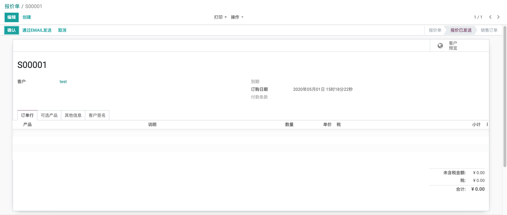

<section class="oe_container app">
    <meta charset="UTF-8">
    <div class="oe_row oe_spaced" style="max-width: 95%;">
        <div class="oe_span12">
            <h2 class="oe_slogan">Odoo enterprise sheet full screen</h2>
            <h2 class="oe_slogan">Odoo企业版表单全屏显示</h2>
            <h4 class="mt8">
                sometimes this is very upset that sheet's width is too small to display more info!
                so,this module is to make it full screen<br>
            </h4>
            <h4 class="mt8">
                有时，表单的宽度太小，不能显示更多信息，这样很让人烦恼！
                所以这个模块可以使表单全屏化<br>
            </h4>
            <div class="oe_demo oe_screenshot">
                    
                <br/>
            </div>  
        </div>
    </div>
</section>